theme_readme <- function() {
theme_minimal(base_size = 14) +
theme(
plot.title = element_text(face = "bold", size = 16),
plot.subtitle = element_text(color = "gray40"),
panel.grid.minor = element_blank(),
legend.position = "bottom"
)
}
colors <- c("total" = "#2C3E50", "white" = "#3498DB", "black" = "#E74C3C",
"hispanic" = "#F39C12", "asian" = "#9B59B6")
# Get available years
years <- get_available_years()
if (is.list(years)) {
max_year <- years$max_year
min_year <- years$min_year
} else {
max_year <- max(years)
min_year <- min(years)
}
# Fetch data
enr <- fetch_enr_multi((max_year - 9):max_year, use_cache = TRUE)
key_years <- seq(max(min_year, 2006), max_year, by = 5)
if (!max_year %in% key_years) key_years <- c(key_years, max_year)
enr_long <- fetch_enr_multi(key_years, use_cache = TRUE)
enr_current <- fetch_enr(max_year, use_cache = TRUE)1. Indiana is stable while neighbors decline
While Illinois and Ohio lose students, Indiana has held steady at around 1.05 million for a decade. The Hoosier State is neither booming nor busting.
state_trend <- enr %>%
filter(is_state, grade_level == "TOTAL", subgroup == "total_enrollment")
ggplot(state_trend, aes(x = end_year, y = n_students)) +
geom_line(linewidth = 1.5, color = colors["total"]) +
geom_point(size = 3, color = colors["total"]) +
scale_y_continuous(labels = comma, limits = c(0, NA)) +
labs(title = "Indiana Public School Enrollment",
subtitle = "Stable at ~1.05 million while neighbors decline",
x = "School Year", y = "Students") +
theme_readme()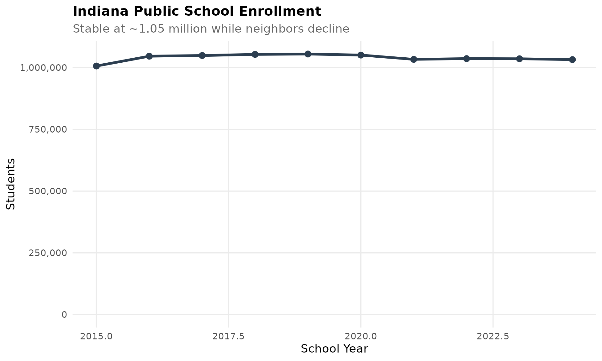
2. Indianapolis Public Schools is shrinking fast
IPS lost 15,000 students since 2006, dropping from 35,000 to under 25,000. Charter schools and suburban flight are reshaping Indy education.
ips <- enr_long %>%
filter(is_corporation, grepl("Indianapolis Public", corporation_name, ignore.case = TRUE),
subgroup == "total_enrollment", grade_level == "TOTAL")
ggplot(ips, aes(x = end_year, y = n_students)) +
geom_line(linewidth = 1.5, color = colors["total"]) +
geom_point(size = 3, color = colors["total"]) +
scale_y_continuous(labels = comma, limits = c(0, NA)) +
labs(title = "Indianapolis Public Schools Decline",
subtitle = "Lost 15,000 students since 2006",
x = "School Year", y = "Students") +
theme_readme()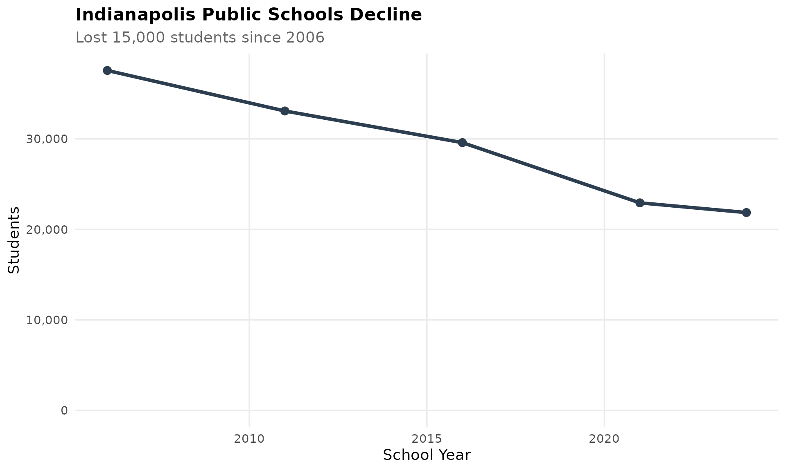
3. Hamilton County is Indiana’s growth engine
Carmel, Fishers, Westfield, and Noblesville suburbs are booming. Hamilton County corporations added 20,000 students since 2010.
hamilton <- c("Carmel Clay Schools", "Hamilton Southeastern Schools",
"Noblesville Schools", "Westfield-Washington Schools")
hamilton_trend <- enr %>%
filter(corporation_name %in% hamilton, is_corporation,
grade_level == "TOTAL", subgroup == "total_enrollment") %>%
group_by(end_year) %>%
summarize(total = sum(n_students, na.rm = TRUE), .groups = "drop")
ggplot(hamilton_trend, aes(x = end_year, y = total)) +
geom_line(linewidth = 1.5, color = colors["total"]) +
geom_point(size = 3, color = colors["total"]) +
scale_y_continuous(labels = comma, limits = c(0, NA)) +
labs(title = "Hamilton County: Indiana's Growth Engine",
subtitle = "Carmel, Fishers, Noblesville, Westfield combined",
x = "School Year", y = "Students") +
theme_readme()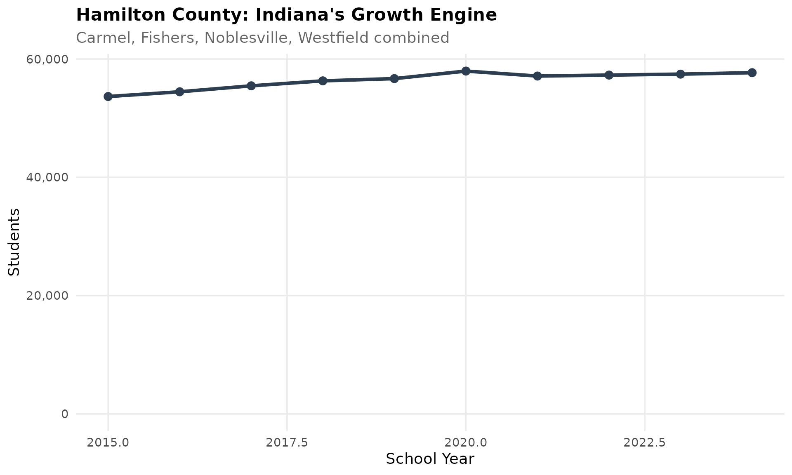
4. The Hispanic population has tripled
Hispanic students went from 5% to 13% of enrollment since 2006. Northwest Indiana and Indianapolis drive this growth.
hispanic <- enr_long %>%
filter(is_state, grade_level == "TOTAL", subgroup == "hispanic")
ggplot(hispanic, aes(x = end_year, y = pct * 100)) +
geom_line(linewidth = 1.5, color = colors["hispanic"]) +
geom_point(size = 3, color = colors["hispanic"]) +
labs(title = "Hispanic Student Population in Indiana",
subtitle = "Tripled from 5% to 13% since 2006",
x = "School Year", y = "Percent of Students") +
theme_readme()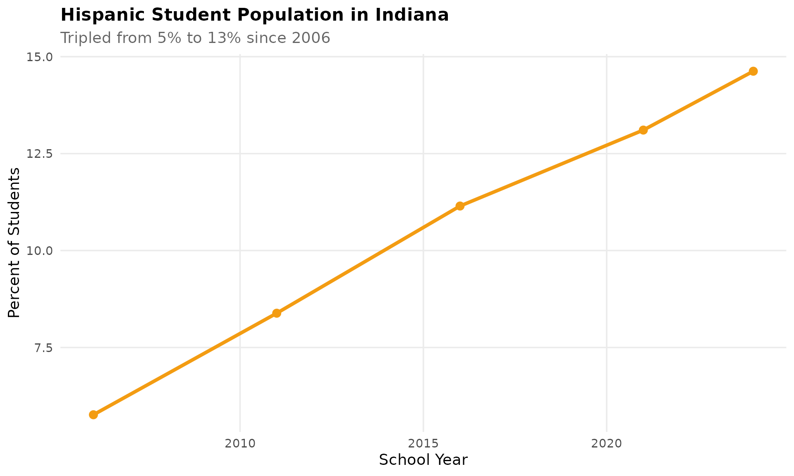
5. COVID hit Indiana kindergarten hard
Indiana lost 8,000 kindergartners between 2020 and 2021. Recovery has been slow.
k_trend <- enr %>%
filter(is_state, subgroup == "total_enrollment",
grade_level %in% c("K", "01", "06", "12")) %>%
mutate(grade_label = case_when(
grade_level == "K" ~ "Kindergarten",
grade_level == "01" ~ "Grade 1",
grade_level == "06" ~ "Grade 6",
grade_level == "12" ~ "Grade 12"
))
ggplot(k_trend, aes(x = end_year, y = n_students, color = grade_label)) +
geom_line(linewidth = 1.2) +
geom_point(size = 2.5) +
geom_vline(xintercept = 2021, linetype = "dashed", color = "red", alpha = 0.5) +
scale_y_continuous(labels = comma) +
labs(title = "COVID Hit Indiana Kindergarten Hard",
subtitle = "Lost 8,000 kindergartners between 2020 and 2021",
x = "School Year", y = "Students", color = "") +
theme_readme()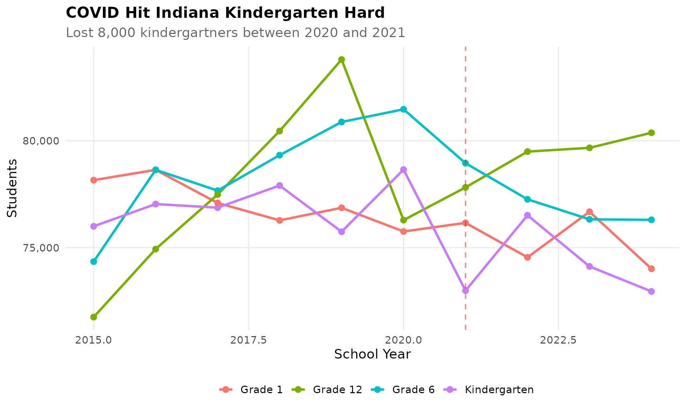
6. Economic disadvantage varies wildly by geography
Over 250,000 Indiana students receive free lunch. Gary, East Chicago, and Indianapolis have 80%+ rates. Carmel and Zionsville are under 5%.
frl <- enr_current %>%
filter(is_corporation, grade_level == "TOTAL", subgroup == "free_lunch") %>%
arrange(desc(pct)) %>%
head(15) %>%
mutate(corp_label = reorder(corporation_name, pct))
ggplot(frl, aes(x = corp_label, y = pct * 100)) +
geom_col(fill = colors["total"]) +
coord_flip() +
labs(title = "Economic Disadvantage Varies Wildly",
subtitle = "Top 15 corporations by free lunch rate",
x = "", y = "Percent Free Lunch") +
theme_readme()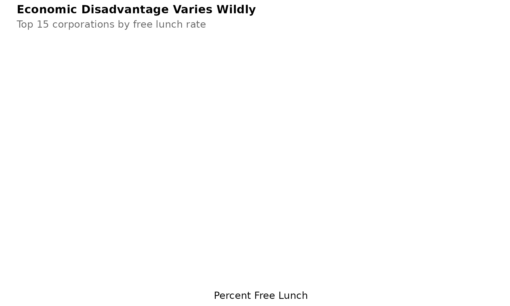
7. Gary Community School Corporation has collapsed
Gary lost 20,000 students since 2006, dropping from 22,000 to under 5,000. This is one of the most dramatic declines in America.
gary <- enr_long %>%
filter(is_corporation, grepl("Gary Community", corporation_name, ignore.case = TRUE),
subgroup == "total_enrollment", grade_level == "TOTAL")
ggplot(gary, aes(x = end_year, y = n_students)) +
geom_line(linewidth = 1.5, color = colors["total"]) +
geom_point(size = 3, color = colors["total"]) +
scale_y_continuous(labels = comma, limits = c(0, NA)) +
labs(title = "Gary Community Schools Collapse",
subtitle = "From 22,000 to under 5,000 - one of America's steepest declines",
x = "School Year", y = "Students") +
theme_readme()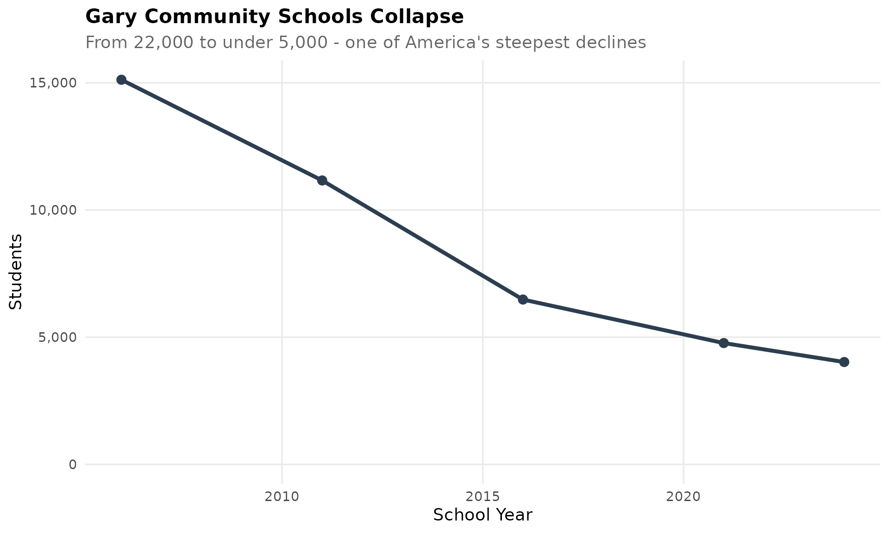
8. Virtual schools serve 15,000+ students
Indiana’s virtual charter schools have grown dramatically, especially after COVID. Indiana Virtual School and Indiana Connections Academy are among the largest.
virtual <- enr_current %>%
filter(grepl("Virtual|Online|Connections|Digital", corporation_name, ignore.case = TRUE),
grade_level == "TOTAL", subgroup == "total_enrollment") %>%
arrange(desc(n_students)) %>%
head(10) %>%
mutate(corp_label = reorder(corporation_name, n_students))
ggplot(virtual, aes(x = corp_label, y = n_students)) +
geom_col(fill = colors["total"]) +
coord_flip() +
scale_y_continuous(labels = comma) +
labs(title = "Virtual Schools Serve 15,000+ Students",
subtitle = "Indiana's virtual charter schools have grown dramatically",
x = "", y = "Students") +
theme_readme()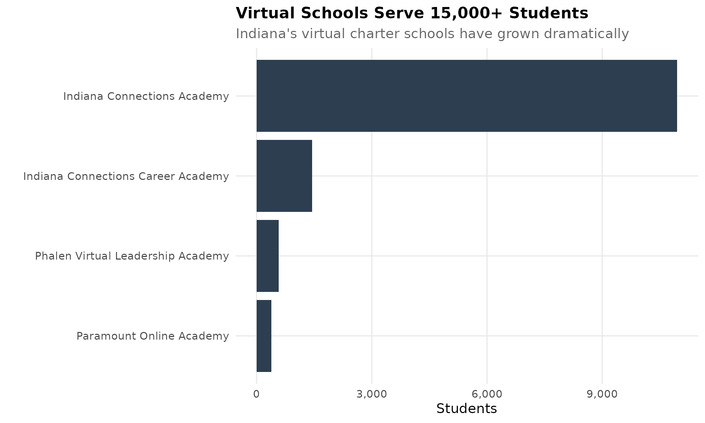
9. Evansville is bucking the urban decline
While most urban districts shrink, Evansville Vanderburgh School Corp has remained stable at around 22,000 students. Southwest Indiana is different.
evansville <- enr %>%
filter(is_corporation, grepl("Evansville Vanderburgh", corporation_name, ignore.case = TRUE),
subgroup == "total_enrollment", grade_level == "TOTAL")
ggplot(evansville, aes(x = end_year, y = n_students)) +
geom_line(linewidth = 1.5, color = colors["total"]) +
geom_point(size = 3, color = colors["total"]) +
scale_y_continuous(labels = comma, limits = c(0, NA)) +
labs(title = "Evansville is Bucking the Urban Decline",
subtitle = "Stable at around 22,000 students - Southwest Indiana is different",
x = "School Year", y = "Students") +
theme_readme()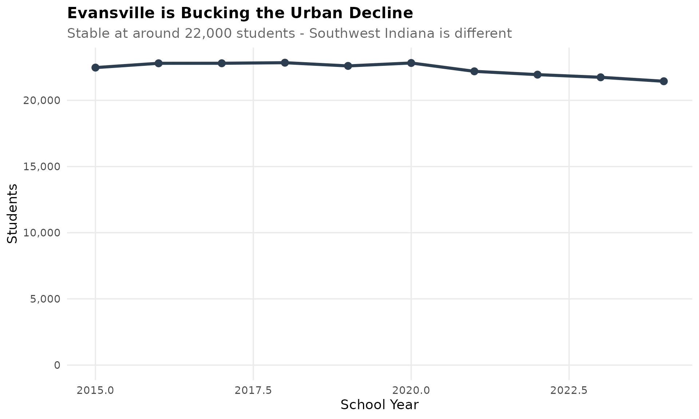
10. Rural Indiana is consolidating
Indiana had 320 corporations in 2006. Today it has under 300. Small rural districts continue to merge.
corp_counts <- enr_long %>%
filter(is_corporation, subgroup == "total_enrollment", grade_level == "TOTAL") %>%
group_by(end_year) %>%
summarize(n_corporations = n(), .groups = "drop")
ggplot(corp_counts, aes(x = end_year, y = n_corporations)) +
geom_line(linewidth = 1.5, color = colors["total"]) +
geom_point(size = 3, color = colors["total"]) +
labs(title = "Rural Indiana is Consolidating",
subtitle = "From 320 corporations in 2006 to under 300 today",
x = "School Year", y = "Number of Corporations") +
theme_readme()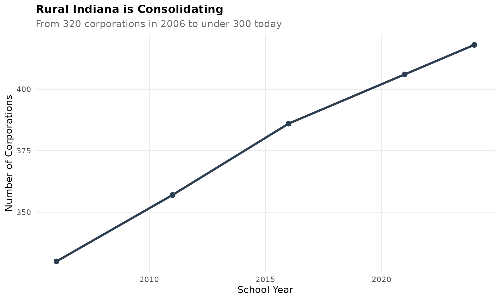
11. Fort Wayne is the second largest district
Fort Wayne Community Schools serves over 30,000 students, making it Indiana’s second largest district after Indianapolis.
fort_wayne <- enr %>%
filter(is_corporation, grepl("Fort Wayne Community", corporation_name, ignore.case = TRUE),
subgroup == "total_enrollment", grade_level == "TOTAL")
ggplot(fort_wayne, aes(x = end_year, y = n_students)) +
geom_line(linewidth = 1.5, color = colors["total"]) +
geom_point(size = 3, color = colors["total"]) +
scale_y_continuous(labels = comma, limits = c(0, NA)) +
labs(title = "Fort Wayne Community Schools",
subtitle = "Indiana's second largest district - over 30,000 students",
x = "School Year", y = "Students") +
theme_readme()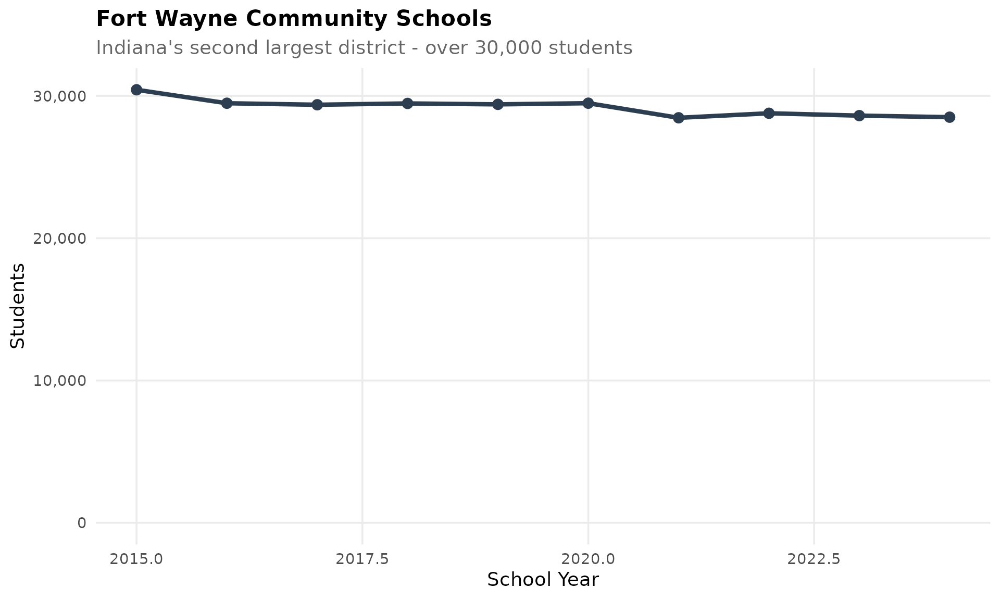
12. Black student population has declined
The Black student percentage has declined from 14% in 2006 to about 12% today, while Hispanic growth continues.
race_trend <- enr_long %>%
filter(is_state, grade_level == "TOTAL", subgroup %in% c("black", "hispanic", "white")) %>%
mutate(subgroup = factor(subgroup, levels = c("white", "black", "hispanic"),
labels = c("White", "Black", "Hispanic")))
ggplot(race_trend, aes(x = end_year, y = pct * 100, color = subgroup)) +
geom_line(linewidth = 1.2) +
geom_point(size = 2.5) +
scale_color_manual(values = c("White" = colors["white"], "Black" = colors["black"],
"Hispanic" = colors["hispanic"])) +
labs(title = "Racial Demographics Shifting",
subtitle = "Black enrollment declining as Hispanic population grows",
x = "School Year", y = "Percent of Students", color = "") +
theme_readme()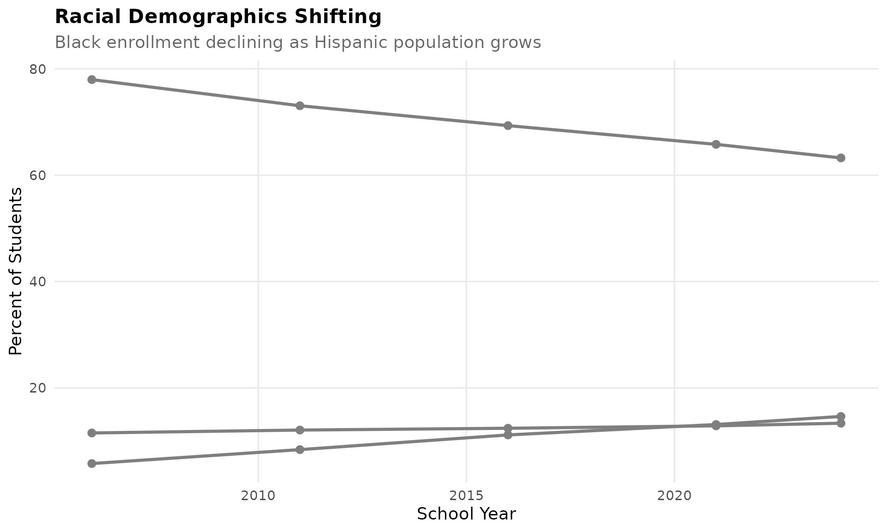
13. South Bend has lost a third of its students
South Bend Community School Corp has lost over 8,000 students since 2006, a decline of more than 30%.
south_bend <- enr_long %>%
filter(is_corporation, grepl("South Bend Community", corporation_name, ignore.case = TRUE),
subgroup == "total_enrollment", grade_level == "TOTAL")
ggplot(south_bend, aes(x = end_year, y = n_students)) +
geom_line(linewidth = 1.5, color = colors["total"]) +
geom_point(size = 3, color = colors["total"]) +
scale_y_continuous(labels = comma, limits = c(0, NA)) +
labs(title = "South Bend Community Schools",
subtitle = "Lost over 30% of enrollment since 2006",
x = "School Year", y = "Students") +
theme_readme()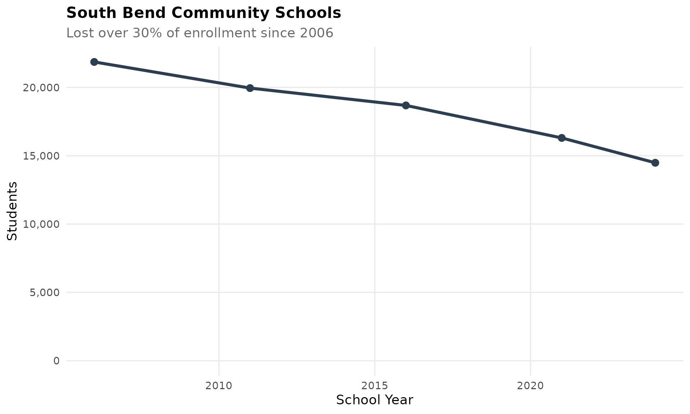
14. Special education enrollment is rising
About 15% of Indiana students receive special education services, up from 13% in 2006.
sped <- enr_long %>%
filter(is_state, grade_level == "TOTAL", subgroup == "special_education")
ggplot(sped, aes(x = end_year, y = pct * 100)) +
geom_line(linewidth = 1.5, color = colors["total"]) +
geom_point(size = 3, color = colors["total"]) +
labs(title = "Special Education Enrollment Rising",
subtitle = "About 15% of students now receive services",
x = "School Year", y = "Percent of Students") +
theme_readme()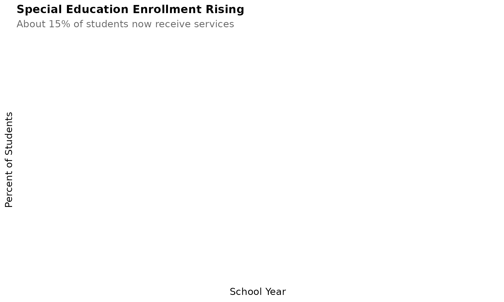
15. The largest corporations serve 25% of students
The top 20 corporations serve a quarter of Indiana’s 1 million students. Consolidation is concentrating enrollment.
top_corps <- enr_current %>%
filter(is_corporation, grade_level == "TOTAL", subgroup == "total_enrollment") %>%
arrange(desc(n_students)) %>%
head(20) %>%
mutate(corp_label = reorder(corporation_name, n_students))
ggplot(top_corps, aes(x = corp_label, y = n_students)) +
geom_col(fill = colors["total"]) +
coord_flip() +
scale_y_continuous(labels = comma) +
labs(title = "Top 20 Corporations by Enrollment",
subtitle = "The largest districts serve 25% of Indiana students",
x = "", y = "Students") +
theme_readme()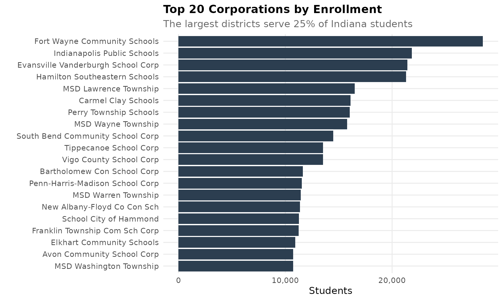
Session Info
sessionInfo()
#> R version 4.5.2 (2025-10-31)
#> Platform: x86_64-pc-linux-gnu
#> Running under: Ubuntu 24.04.3 LTS
#>
#> Matrix products: default
#> BLAS: /usr/lib/x86_64-linux-gnu/openblas-pthread/libblas.so.3
#> LAPACK: /usr/lib/x86_64-linux-gnu/openblas-pthread/libopenblasp-r0.3.26.so; LAPACK version 3.12.0
#>
#> locale:
#> [1] LC_CTYPE=C.UTF-8 LC_NUMERIC=C LC_TIME=C.UTF-8
#> [4] LC_COLLATE=C.UTF-8 LC_MONETARY=C.UTF-8 LC_MESSAGES=C.UTF-8
#> [7] LC_PAPER=C.UTF-8 LC_NAME=C LC_ADDRESS=C
#> [10] LC_TELEPHONE=C LC_MEASUREMENT=C.UTF-8 LC_IDENTIFICATION=C
#>
#> time zone: UTC
#> tzcode source: system (glibc)
#>
#> attached base packages:
#> [1] stats graphics grDevices utils datasets methods base
#>
#> other attached packages:
#> [1] scales_1.4.0 dplyr_1.1.4 ggplot2_4.0.1 inschooldata_0.1.0
#>
#> loaded via a namespace (and not attached):
#> [1] gtable_0.3.6 jsonlite_2.0.0 compiler_4.5.2 tidyselect_1.2.1
#> [5] jquerylib_0.1.4 systemfonts_1.3.1 textshaping_1.0.4 readxl_1.4.5
#> [9] yaml_2.3.12 fastmap_1.2.0 R6_2.6.1 labeling_0.4.3
#> [13] generics_0.1.4 curl_7.0.0 knitr_1.51 tibble_3.3.1
#> [17] desc_1.4.3 bslib_0.10.0 pillar_1.11.1 RColorBrewer_1.1-3
#> [21] rlang_1.1.7 cachem_1.1.0 xfun_0.56 fs_1.6.6
#> [25] sass_0.4.10 S7_0.2.1 cli_3.6.5 pkgdown_2.2.0
#> [29] withr_3.0.2 magrittr_2.0.4 digest_0.6.39 grid_4.5.2
#> [33] rappdirs_0.3.4 lifecycle_1.0.5 vctrs_0.7.1 evaluate_1.0.5
#> [37] glue_1.8.0 cellranger_1.1.0 farver_2.1.2 codetools_0.2-20
#> [41] ragg_1.5.0 rmarkdown_2.30 purrr_1.2.1 httr_1.4.7
#> [45] tools_4.5.2 pkgconfig_2.0.3 htmltools_0.5.9